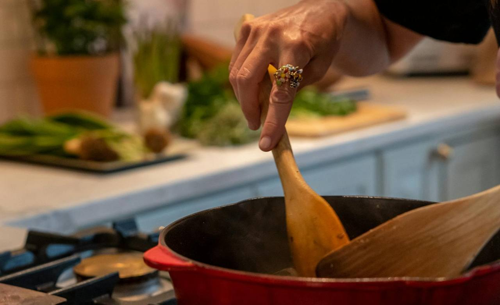
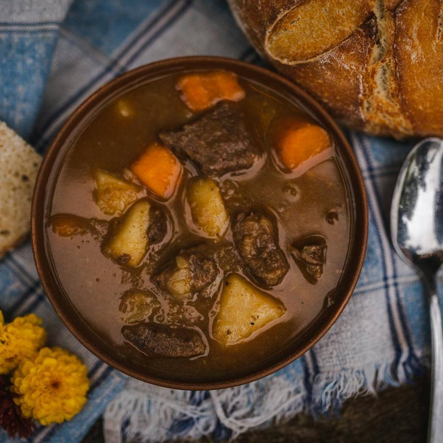
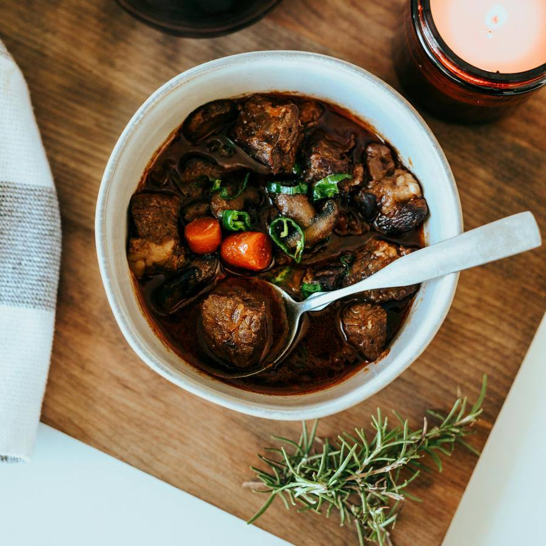
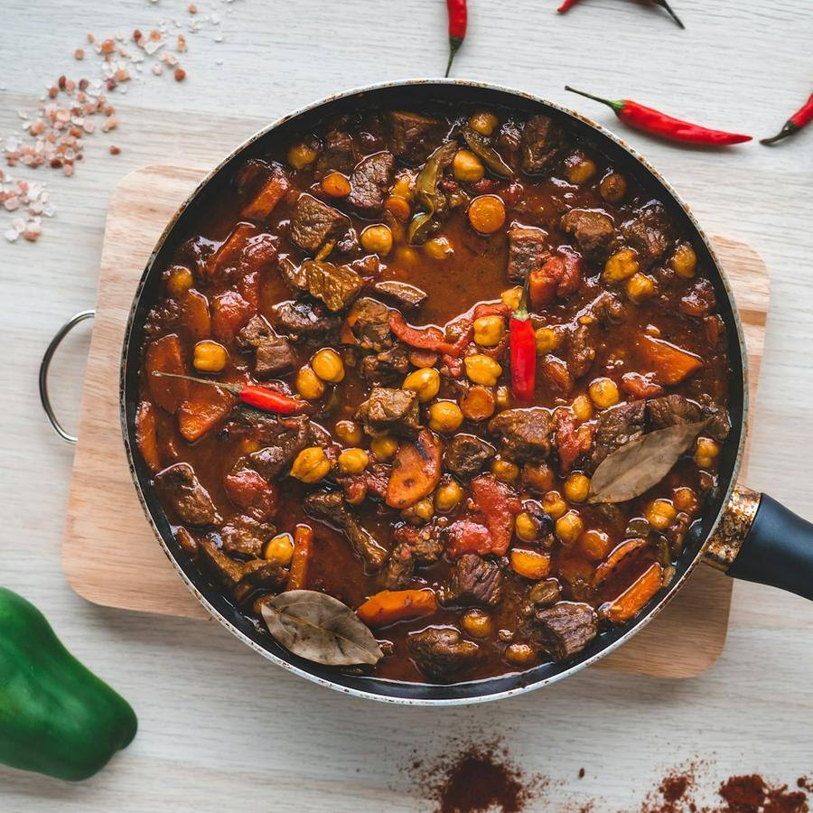

Comida casera para llevar · Carrús, Elche
Comida de casa, lista para llevar
Carmen cocina cada mañana lo que comería en su casa: cocido con pelotas, lentejas, arroz con costra y croquetas. Lo encargas, lo recoges caliente y comes como en casa.
Por qué La Olla de Carmen
Lo que nos diferencia
Recetas de toda la vida
Sin precocinados: sofrito, caldo y paciencia, como en casa.
Encarga y recoge
Dinos a qué hora pasas y te lo tenemos caliente.
Raciones generosas
Una ración da para comer bien. Y el pan va incluido.
Bandejas para grupos
Para comidas de empresa, cumpleaños o la familia el domingo.
Comida casera para llevar
La carta
Precio por ración. El menú del día cambia cada mañana: lo publicamos a las 10:00.
Cuchara

Cocido con pelotas
8,50 €El de Elche, con su caldo aparte.
favoritoLentejas estofadas
6,50 €Con chorizo y verduras.
Puchero de verduras
6,00 €Opción vegetariana.
vegetariano
Segundos
Arroz con costra
9,50 €Por encargo, mínimo 4 raciones.
favorito
Pollo al ajillo
7,50 €Con patatas panaderas.
Albóndigas en salsa
7,50 €De ternera y cerdo.
Para picar y postres

Croquetas caseras
7,00 €Jamón o pollo, 8 unidades.
favoritoEnsaladilla rusa
5,50 €Arroz con leche
2,50 €Con canela y piel de limón.
Menú del día
9,90 €Primero, segundo, pan y postre.
nuevo
Galería
Pásate a verlo
Fotos del local y de lo que hacemos. Pulsa para verlas en grande.
Reseñas
Lo que dicen de nosotros
Reseñas de ejemplo: en tu web van las tuyas, enlazadas a tu ficha de Google.
- Fina R.hace 3 días5 de 5
El cocido sabe igual que el de mi madre. Lo encargo cada jueves.
- David M.hace 1 semana5 de 5
Trabajo cerca y el menú del día me ha salvado la semana. Raciones enormes.
- Concha P.hace 1 mes5 de 5
Encargamos bandejas para el cumple de mi padre y no sobró ni una croqueta.
- Óscar T.hace 2 meses4 de 5
Comida buenísima. A partir de las 14:00 ya no queda arroz.
- Amparo L.hace 2 semanas5 de 5
Carmen es un amor y su arroz con costra, una joya.
Hacer un encargo
Tu encargo en tres pasos
- 1
Elige tus platos
Raciones, menú del día o bandejas.
- 2
Dinos a qué hora pasas
De 12:00 a 16:00.
- 3
Recoge caliente
En recipientes que puedes devolver.
Visítanos
Dónde estamos
Horario
| Lunes | 12:00 – 16:00 |
|---|---|
| Martes | 12:00 – 16:00 |
| Miércoles | 12:00 – 16:00 |
| Jueves | 12:00 – 16:00 |
| Viernes | 12:00 – 16:00 |
| Sábado | 12:00 – 16:00 |
| Domingo | Cerrado |
Cómo llegar
- Junto al mercado de Carrús
- Aparcamiento de 10 minutos en la puerta
- Reparto en Carrús para pedidos de más de 25 €
Contacto
¿Con cuánta antelación pido?
Para el menú del día, antes de las 11:00. Los arroces y bandejas, el día anterior.
¿Hacéis encargos para grupos?
Sí: dinos cuántos sois y te preparamos bandejas.
¿Tenéis opciones sin gluten?
Varios platos lo son; te lo indicamos al encargar.
¿Abrís los domingos?
No, el domingo Carmen descansa.
Te esperamos en Carrús
Carmen cocina cada mañana lo que comería en su casa: cocido con pelotas, lentejas, arroz con costra y croquetas.
Hacer un encargo¿Quieres una web así para tu negocio?
La Olla de Carmen es un negocio inventado: esta página es una plantilla de ejemplo. La adapto a tu negocio con tus fotos, tus precios, tus reseñas y tu forma de reservar. Pruébala tal cual: la reserva funciona, pero no envía nada a nadie.
- Carta o servicios por categorías, galería y reseñas
- Reserva o cita en pocos pasos, con aviso por WhatsApp
- Lista para el móvil, rápida y sin cookies de terceros
- Aviso legal, privacidad y cookies incluidos